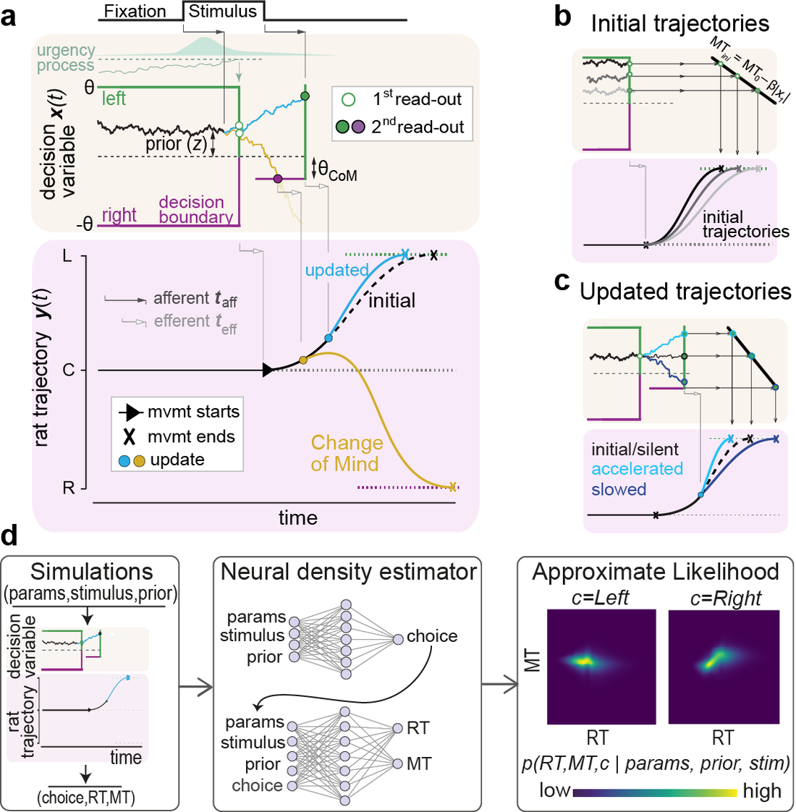

2024 · Nature Communications
Perceptual decisions keep evolving even while the body is already in motion. Combining psychophysics in humans and rats with drift-diffusion modelling, we show that ongoing evidence accumulation continuously re-shapes motor output — a tight, real-time coupling between decision formation and movement.

Decision variable + motor trajectory with change-of-mind · simulation-based inference of the likelihood.